생산자동화산업기사 (2002-09-08 기출문제)
1과목: 기계가공법 및 안전관리
1. 도가니로 호칭을 번호로 할 때가 있는데 이 번호는 무엇을 뜻하는가?
- 도가니의 중량
- 도가니의 높이
- 도가니의 내경
- 1회 녹일 수 있는 구리의 중량(kg)
(정답률: 45%)

2. 세이퍼 작업시 주의할 점으로 틀린 것은?
- 세이퍼 정면앞에서 작업을 하지말 것
- 바이트는 될수록 짧게 고정할 것
- 세이퍼 운전중에는 어느곳이나 급유하지 말 것
- 쇳밥(chip)은 맨손으로 신속하게 제거할 것
(정답률: 83%)
3. 가공하는 전극과 공작물 사이에 지립(砥粒)의 역할을 겸하는 절연체를 개재시켜 전해작용으로 생긴 양극의 산화피막을 절연체의 기계적 작용으로 제거하는 가공법은?
- 전기분해
- 전기화학 가공
- 전해연삭
- 방전가공
(정답률: 65%)
4. 단조의 목적이 아닌 것은?
- 재료를 필요한 모양으로 변화시키는 것이다.
- 금속의 조직입자를 미세화한다.
- 단조중 조직의 변형과 재결정이 반복된다.
- 변태점에서의 단조는 질을 향상시킨다.
(정답률: 58%)
5. 선반 센터에 사용되는 테이퍼는?
- 브라운 샤프 테이퍼(brown & sharpe taper)
- 모스 테이퍼(morse taper)
- 내셔날 테이펴(national taper)
- 자노 테이퍼(jarno taper)
(정답률: 27%)
6. 리벳(rivet)작업 용구와 관계가 없는 것은?
- 토치(Torch)
- 스냅(Snap)
- 해머(Hammer)
- 펀치(Punch)
(정답률: 66%)
7. 측정기기 중 한계 게이지란?
- 양쪽 다 통과 하도록 되어 있다.
- 한쪽은 통과하고, 다른 한쪽은 통과하지 않도록 되어있다.
- 한쪽은 헐겁게 통과하고 다른 한쪽은 약간 헐겁게 통과 하도록 되어 있다.
- 양쪽 다 통과하지 않도록 되어 있다.
(정답률: 50%)
8. 교류아크 용접기에서 1차측 전압 및 코일권수를 각각 E1, T1이라고 하고, 2차측 전압 및 코일권수를 각각 E2, T2라고 하면 옳은 관계식은?
- E1/E2 = T2/T1
- E1/E2 = 2T2/T1
- E1/E2 = T1/T2
- E1/E2 = 2T1/T2
(정답률: 72%)
9. 마이크로미터의 구조가 아닌 것은?
- 에이프런(apron)
- 앤빌(anvil)
- 프레임(frame)
- 딤블(thimble)
(정답률: 44%)
10. CNC 기계에서 기계적 운동을 전기적 신호로 바꾸어 주는 장치는?
- 인코더
- 리졸버
- 서보기구
- 컨트롤러
(정답률: 53%)
11. 컴퓨터의 기억용량 표시가 틀린 것은?
- 1 Gigabyte = 230bit
- 1 Megabyte = 220bit
- 1 Kilobyte = 210bit
- 1 byte =16 bit
(정답률: 91%)
12. 서피스 모델은 와이어 프레임 모델의 선으로 둘러싸인 면을 정의한 것이다. 이것의 특징에 해당되지 않는 것은?
- 단면도를 작성할 수 없다.
- 은선제거가 가능하다.
- 2개 면의 교선을 구할 수 있다.
- 복잡한 형상 표현이 가능하다.
(정답률: 37%)
13. 모델링 방법중에서 부울(Bool)연산에 의해서 3차원 모델을 구성하는 것은?
- B-rep(Boundary representation)
- Wireframe
- CSG(Constructive Solid Geometry)
- Point model
(정답률: 40%)
14. CNC선반 프로그램 작성에서 보조 프로그램을 사용하는 주 목적은?
- CNC 가공속도를 빠르게 하기 위하여
- 별로 중요하지 않은 프로그램을 짤 경우
- 반복작업이 있는 경우 프로그램을 간단하게 하기 위하여
- NC코드와 컴퓨터 언어를 사용하여 NC공작기계의 기능을 넓히기 위하여
(정답률: 53%)
15. 자동 프로그래밍의 이점이 아닌 것은?
- CNC프로그램을 작성하는데 필요한 시간과 노력이 줄어들고 신뢰성이 높은 프로그램을 작성할 수 있다.
- 복잡한 형태의 프로그래밍에 좋다.
- 프로그램의 검증이 용이하고 프로그램상의 오류를 줄일 수 있다.
- 기하학적 계산이 많을 때는 불리하다.
(정답률: 46%)
16. 다음 중 NC기계의 안전에 관한 사항으로 올바르지 않은 것은?
- 급송 이송시 충돌에 유의한다.
- 공구를 교환하기위해 기준점(reference point) 위치로 보낼때는 공구보정을 취소하지 않는다.
- NC유닛 및 강전반에 어떠한 충격을 주어서도 안된다.
- 부품을 교환할 때는 규격화된 부품을 사용한다.
(정답률: 73%)
17. 다음 2차원 평면상에서 물체를 θ 만큼 반시계방향으로 회전변환하려고 한다. 이 경우 보기의 2차원 변환행렬의 요소 중 c의 값은?
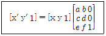
- cosθ
- sinθ
- -sinθ
- -cosθ
(정답률: 29%)
18. 192000 bit의 화일을 9600 bps로 전송하는데 소요되는 시간은?
- 2분
- 20초
- 1분 30초
- 5초
(정답률: 62%)
19. CNC선반에서 나사가공을 하는 준비기능과 관계 없는 것은?
- G21
- G32
- G76
- G92
(정답률: 35%)
20. 회전수 1000rpm, 이송 0.15mm/rev인 경우 이송속도 F(mm/min)는 얼마인가?
- 150
- 1500
- 667
- 6667
(정답률: 69%)
2과목: 기계제도 및 기초공학
21. 원통 커플링(muff coupling)에서 원통이 축을 누르는 힘 100㎏f, 축지름 40㎜, 마찰계수 0.2일때 이 커플링이 전달할 수 있는 토크는 얼마인가?
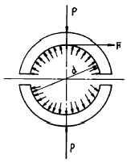
- 84.5 kgf.cm
- 96.8 kgf.cm
- 1⑤.8 kgf.cm
- 125.6 kgf.cm
(정답률: 12%)
22. 코터이음의 자립을 위한 조건은 마찰각을 ρ, 구배를 α라 할 때 어느 것이 알맞는가?
- 양쪽구배 α ≤ ρ
- 한쪽구배 α ≤ ρ
- 양쪽구배 α ≥ 2ρ
- 한쪽구배 α ≥ 2ρ
(정답률: 27%)
23. 볼 나사의 장점이 아닌 것은?
- 윤활에 그다지 주의하지 않아도 좋다.
- 먼지에 의한 마모가 적다.
- 백래시를 작게 할 수 있다.
- 피치를 그다지 작게 할 수 없다.
(정답률: 45%)
24. 지름이 5 cm인 봉에 800 kgf의 인장력이 작용할 때 응력(kgf/cm2)은 약 얼마인가?
- 41
- 51
- 80
- 120
(정답률: 56%)
25. 탄소량이 변화하면 탄소강의 성질도 변화된다. 탄소량이 증가하면 어떠한 현상이 나타나는가?
- 열팽창계수가 증가한다.
- 열전도율이 증가한다.
- 전기저항이 증가한다.
- 비중이 증가한다.
(정답률: 38%)
26. 기어 이의 크기를 표시하는 방법 중 원주피치(ρ)를 나타내는 것이 아닌 것은? (단, z는 잇수, m 은 모듈, Dp 는 지름피치, D는 피치원 지름이다.)
- ρ = π D / Z
- ρ = π m
- ρ = mZ / D
- ρ = 25.4π / Dp
(정답률: 28%)
27. 기계 재료의 조직 검사법 중 결함 검사법에 해당되지 않는 것은?
- 자력결함 검사법
- 형광 검사법
- X-선 검사법
- 인장시험 검사법
(정답률: 53%)
28. 8PS, 750rpm의 원동축에서 축간거리 820㎜, 250rpm의 종동차에 전달하고자 한다. 롤러체인을 써서 체인의 평균속도를 3m/sec, 안전율을 15로 할때 양스프로킷의 잇수는 각각 얼마정도인가? (단, 피치는 19.⑤㎜로 한다.)
- Z1 = 13, Z2 = 39
- Z1 = 15, Z2 = 45
- Z1 = 20, Z2 = 60
- Z1 = 30, Z2 = 90
(정답률: 38%)
29. 금속의 소성가공에서 열간가공과 냉간가공의 구분은 무엇으로 하는가?
- 변태온도
- 용융온도
- 재결정온도
- 응고온도
(정답률: 60%)
30. 수압이 28㎏f/㎝2이고, 허용인장강도가 5㎏f/㎜2이며, 효율이 70%인 상온에서 사용하는 이음매 없는 강관의 바깥 지름 Do는 얼마 정도인가? (단, 부식을 고려한 상수 C의 값은 1㎜, 강관의 안지름은 580㎜이다.)
- Do = 581.8㎜
- Do = 628.4㎜
- Do = 604.2㎜
- Do = 891.7㎜
(정답률: 39%)
31. 14% 정도의 Si를 포함한 고Si주철은?
- 칠드주철
- 미하나이트주철
- 내열주철
- 내산주철
(정답률: 31%)
32. 미끄럼 저어널 베어링에서 허용 압력 속도 계수를
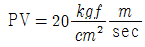
로 줄 때 저어널이 5000 ㎏f의 하중을 받고 250 rpm으로 회전한다면 저어널의 길이는?- 28.37㎝
- 32.72㎝
- 34.76㎝
- 39.35㎝
(정답률: 32%)
33. 냉간 가공이나 용접을 한 금속으로부터 강도를 크게 떨어뜨리지 않고 변형방지와 내부응력을 제거하기 위한 가장 좋은 열처리법은?
- 오스템퍼링
- 뜨임
- 노말라이징
- 응력제거풀림
(정답률: 39%)
34. 다음 중 고속도강의 재료 표시기호는?
- STD
- STS
- SSC
- SKH
(정답률: 29%)
35. 다음 나사산의 각도중 틀린 것은?
- 미터나사 60°
- 휘트워드나사 55°
- 사다리꼴나사 35°
- 유니파이나사 60°
(정답률: 45%)
36. 회전수가 N(rpm)인 볼베어링의 수명시간[Lh]은? (단, P는 베어링하중, C는 기본 부하용량이다.)
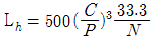
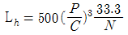
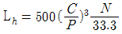
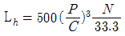
(정답률: 48%)
37. Ms점 이하 Mf점 이상을 이용한 것으로 오스테나이트 조직의 온도에서 Ms점(100∼200℃)이하로 열욕 담금질하여 뜨임 마르텐사이트와 하부 베이나이트 조직을 만드는 항온 열처리 방법은?
- 담금질
- 오스템퍼
- 마템퍼
- 항온풀림
(정답률: 15%)
38. 복합재료 중 FRP는 무엇을 말하는가?
- 섬유 강화 목재
- 섬유 강화 플라스틱
- 섬유 강화 금속
- 섬유 강화 세라믹
(정답률: 60%)
39. 다음 중 다이스강(dies steel)의 특징이 아닌 것은?
- 고온경도가 낮다.
- 경도가 높아 내마모성이 좋다.
- 풀림처리 상태에서 가공성이 양호하다.
- 담금질에 의한 변형이 적다.
(정답률: 40%)
40. 탄소강에서 탄소(C) %의 증가에 따라 물리적 성질이 증가하는 것은?
- 비중
- 열팽창계수
- 열전도도
- 전기적저항
(정답률: 28%)
3과목: 자동제어
41. 기호 요소 중 2개 이상의 기능을 갖는 유닛을 나타낼 때 사용하는 포위선은?
- 실선
- 파선
- 일점 쇄선
- 복선
(정답률: 35%)
42. PLC에 사용되는 용어로서 현재 진행중인 동작과 상태가 완료할 때까지 다음 동작이나 상태로 이행되지 않도록 하는 작업은?
- 인터록(Interlock)
- 인터페이스(Interface)
- 워치 독 타임(Watch Dog Time)
- 니모닉(Mnemonic)
(정답률: 46%)
43. f(t)=e-at의 라플라스 변환은?
- 1 / s-a
- 1 / s+a
- 1 / (s-a)2
- 1 / (s+a)2
(정답률: 32%)
44. 다음 NC공작기계의 제어방식 중 설명이 틀린 것은?
- 제어대상은 일감과 절삭공구의 상대위치, 절삭속도, 절삭깊이, 이송 등의 절삭조건이다.
- 절삭공구의 위치 결정 제어는 절삭공구의 일감에 대한 위치 또는 그 이동량을 제어하는 것이다.
- 제어 지령이 전기적인 펄스와 같은 단속적인 신호로 주어질 때 이것을 아날로그 제어라 한다.
- 신호를 주는 데에는 천공테이프, 자기테이프 등이 쓰이며 컴퓨터의 기억장치를 사용하기도 한다.
(정답률: 58%)
45. 마이크로프로세서를 이용하여 만들어진 제품의 특징 설명이 아닌 것은?
- 신뢰성이 향상된다.
- 제품이 대형화된다.
- 기능의 변경이 용이하다.
- 제품가격이 저렴해진다.
(정답률: 47%)
46. 유체의 흐름이 한 방향으로만 허용되는 밸브는?
- 니들 밸브
- 언로드 밸브
- 체크 밸브
- 유량 밸브
(정답률: 75%)
47. 공압 단동 실린더의 운동방향을 제어할 수 있는 가장 간단하고 적당한 밸브는?
- 4/2 - way 밸브
- 3/2 - way 밸브
- 4/3 - way 밸브
- 5/2 - way 밸브
(정답률: 59%)
48. 그림은 유압 재생회로의 동작 원리를 보여 주고 있다. 다음 중 재생회로의 특징이 아닌 것은?
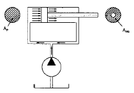
- 재생회로에서는 실린더의 전진속도는 물론 실린더가 낼 수 있는 힘도 증가한다.
- 실린더 양측에 압력이 걸리더라도 면적 차이 때문에 피스톤 로드 측의 유량이 피스톤 측으로 다시 들어가서 펌프에서 토출된 유량과 합쳐지므로 실린더의 전진 속도가 빨라진다.
- 재생회로에서는 양측에 압력이 걸리므로 마찰력이 증대한다. 이 때문에 면적비가 2 이상인 경우에만 재생 회로가 사용된다.
- 재생회로와 면적비가 2인 실린더를 사용하는 경우에는 실린더의 전진속도와 후진속도가 같아져서 등속회로가 설립된다.
(정답률: 12%)
49. 다음 블록 선도의 전달함수의 값은?
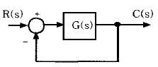
- 1+1/G
- G/(1-G)
- G/(1+G)
- 2G
(정답률: 43%)
50. PLC의 중앙처리장치(CPU)에 대한 설명이 아닌 것은?
- 연산부와 메모리부로 구성된다.
- 데이터 메모리는 시퀀스 중의 보조릴레이, 타이머, 카운터 등의 기능을 갖는다.
- 내장된 프로그램 카운터에 의하여 입력된 동작 순서에 따라 시퀀스를 실행하도록 연산부에 지령한다.
- 교류의 상용 전원 전압을 CPU가 동작하는 직류의 전압으로 바꾸는 역할을 한다.
(정답률: 77%)
51. 다음의 기호 명칭으로 적합한 것은?
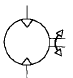
- 유압펌프
- 유압모터
- 공기압 모터
- 윤활기
(정답률: 29%)
52. 다음 그림에서 유량제어 밸브의 제어방식이다. 어떤 회로인가?
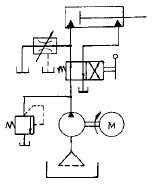
- 미터아웃 회로
- 블리드오프 회로
- 압력유지 회로
- 안전장치 회로
(정답률: 58%)
53. PLC 사용의 장점이라고 할 수 없는 것은?
- 제어반 구성시 판넬 구성과 프로그램을 병행할 수 있다.
- 시방변경에 따른 프로그램변경이 용이하다.
- CPU 이상 발생시 I/O(입출력) 동작에 영향이 없다.
- 신뢰성이 높고 무접점으로 수명이 길다.
(정답률: 67%)
54. 되먹임 제어계의 장점이 아닌 것은?
- 전체 제어계는 항상 안정하다
- 목표값에 정확히 도달할 수 있다
- 제어계의 특성을 향상시킬 수 있다
- 외부 조건 변화에 대한 영향을 줄일 수 있다
(정답률: 55%)
55. 다음 중 인력 조작 방식이 아닌 것은?
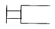
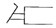
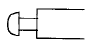
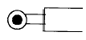
(정답률: 50%)
56. 절대 압력을 올바르게 표현한 것은?
- 절대압력은 완전한 진공을 "0"으로 하여 측정한 압력이다.
- 절대압력은 대기압을 "0"으로 하여 측정한 압력이다.
- 절대압력은 표준 대기압력보다 항상 높다.
- 절대압력은 게이지압력을 말한다.
(정답률: 58%)
57. 회전체의 각 변위를 측정하는 센서로 절대각을 측정하는 센서는?
- 앱솔루트 인코더
- 리졸버
- 포텐쇼 미터
- 타코미터
(정답률: 50%)
58. 그림과 같은 기계시스템에서 f(t)를 입력으로 하고 x(t)를 출력으로 하였을 때의 전달함수는?
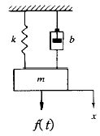
- ms2+bs+k
- 1 / ms2+bs+k
- s / ms2+bs+k
- k / ms2+bs+k
(정답률: 42%)
59. 다음 회로는 공압 복동실린더를 이용한 자동복귀 회로도로써 실린더의 전·후진 속도조절이 가능하다.
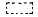
부분의 적당한 요소는?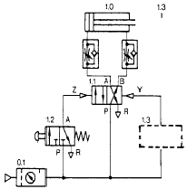
- 2포트 롤러 전환밸브(상시닫힘)
- 2포트 롤러 전환밸브(상시열림)
- 3포트 롤러 전환밸브(상시닫힘)
- 3포트 롤러 전환밸브(상시열림)
(정답률: 42%)
60. 면적이 10cm2인 곳을 50kgf의 무게로 누를때 면적에 작용하는 압력은?
- 5kgf/㎝2
- 10kgf/㎝2
- 58gf/㎝2
- 5kgf/m2
(정답률: 58%)
4과목: 메카트로닉스
61. 그림과 같은 타이머에서 핀번호 ①과 ③번의 접점을 무슨 접점이라고 하는가?
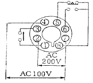
- 한시 a접점
- 한시 b접점
- 순시접점
- 한시 c접점
(정답률: 39%)
62. 16진수 5D3A를 2진수로 표현한 것은?
- 1000 0001 1110 1010
- 1100 1001 0001 1100
- 0011 1010 1000 1110
- 0101 1101 0011 1010
(정답률: 64%)
63. 다음 그림과 같은 논리회로는 무슨 회로인가?
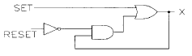
- 무접점 정지우선 회로
- 무접점 기동우선 회로
- 무접점 선행우선 회로
- 무접점 순차동작 회로
(정답률: 31%)
64. 영구자석이 내장된 피스톤은 외부와 연결부가 없으며 공압 에너지에 의해 10m의 행정 거리까지도 자유롭게 사용가능한 것은?
- 단동 실린더
- 탠덤 실린더
- 로드레스 실린더
- 롤링 격판 실린더
(정답률: 40%)
65. 다음 중 PLC 출력 모듈의 종류로 볼 수 없는 것은?
- 트랜지스터 출력
- 계전기 출력
- 콘덴서 출력
- SSR 출력
(정답률: 31%)
66. 다음 중 불대수의 공리가 잘못 된 것은?
- X=1이 아니면 X=0, X=0이 아니면 X=1 이다.
- 1 + 1 = 1, 0·0 = 0
- 0 + 0 = 0, 1·1 = 1
- 0 + 1 = 0, 1·0 = 0
(정답률: 48%)
67. 다음 중 시퀀스 제어의 응용분야가 아닌 것은?
- 커피자판기
- 수력발전소의 기동
- 전기세탁기
- 항온조의 운전
(정답률: 63%)
68. NC기계와 같이 작업의 일련된 시퀀스를 프로그램에 의해 설정할 수 있는 기계화 레벨은?
- 범용 기계 레벨
- 고정 시컨스 레벨
- 프로그래머블 레벨
- 지능형(인텔리전스)레벨
(정답률: 53%)
69. 1개의 전기 펄스가 가해질 때 1스텝 회전하고 그 위치에서 일정의 유지 토크로 정지하는 모터는?
- 스테핑 모터
- 유도 전동기
- 동기 전동기
- 직류 전동기
(정답률: 87%)
70. 제어 시스템에 있어 제어 요소와 그 기능이 잘못 짝이 형성된 것은?
- 신호 요소 - 신호 입력
- 제어 요소 - 신호 처리
- 구동 요소 - 신호 제어
- 최종 제어 요소 - 신호 출력
(정답률: 60%)
71. 시퀀스 제어계를 구성하는 각 요소가 어떻게 동작하고 신호는 어떻게 전달되는지 전체를 파악하는데 사용되는 구성도는?
- 블록 선도
- 논리 회로도
- 배선도
- 전개 접속도
(정답률: 34%)
72. PLC의 기능과 성능을 결정하는 가장 중요한 프로그램인 『시스템 프로그램』은 PLC의 어느 메모리에 저장되는가?
- 프로그램 메모리
- ROM
- RAM
- 캐시 메모리
(정답률: 29%)
73. 전기용 그림 기호 중에서 다음 그림과 같은 기호를 사용하는 기기명은?
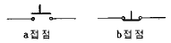
- 푸시버튼 스위치
- 리미트 스위치
- 전자 릴레이
- 전동기
(정답률: 50%)
74. 다음 중 센서의 출력 신호가 아날로그 전압인 경우 그 신호를 디지털 신호로 변환시켜 주는 기기는?
- A/D 변환기
- F/V 변환기
- U/D 변환기
- D/A 변환기
(정답률: 72%)
75. 유압펌프에서 소음이 나는 원인은?
- 에어 필터의 막힘
- 이종유 사용
- 장시간 고압에서의 운전
- 회로가 국부적으로 교축
(정답률: 54%)
76. 다음 논리 회로 명은?
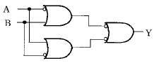
- NAND
- EXCLUSIVE OR
- HALF ADDER
- FULL ADDER
(정답률: 59%)
77. 시퀀스 제어에 관한 설명 중 옳지 않은 것은?
- 시간 지연 요소도 사용된다.
- 조합 논리 회로도 사용된다.
- 기계적 계전기도 사용된다.
- 전체계통에 연결된 스위치가 일시에 동작할 수도 있다.
(정답률: 45%)
78. 콘베이어에서 1분에 3,000개의 검출체가 이동할 때 통과한 검출체를 계수하기 위한 근접 센서의 최소 감지 주파수(Hz)는?
- 20
- 30
- 40
- 50
(정답률: 45%)
79. 다음과 같은 주파수 응답 궤적의 전달 함수는?
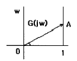
- G(jω) = 1 + jωT
- G(jω) = 1 - jωT
- G(jω) = 1 / jωT
- G(jω) = -(1 / jωT)
(정답률: 44%)
80. PLC의 제어 프로그램에 대한 설명으로 적절하지 않은 것은?
- 프로세서가 실행하는 명령들의 집합이다.
- 프로그램 메모리에 저장되어 있다.
- 문제 해결을 위한 방법이 포함되어 있다.
- 제어 프로그램과 데이터가 혼합되어 있다.
(정답률: 29%)